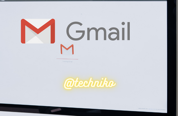

Gmail Guide: History, Origin, and More

Five Facts About Gmail
Gmail was originally released to the public in 2004.
Gmail holds 20% of the global email client market.
The Gmail app has been downloaded over 1 billion times from the Google Play Store.
Gmail supports up to 74 different languages.
Even as the standard email app for Android, the Gmail app was opened more times on
What Is Gmail: Explained
Gmail is a free email hosting service that is supported by subscriptions and advertisements. As part of Google’s ecosystem of software, Gmail accounts later became integrated with thousands of other products and services. This led to many people associating their Gmail account with their overall Google account.
Today, Gmail accounts and Google accounts have become synonymous. All Google services such as Google+, Google Calendar, Google Drive, Google Hangouts, Google Meet, YouTube, Google Play Store, and Google Play Services can be found together. Anyone who’s ever owned or used an Android-based smartphone has a Google account and thus a Gmail account.
Quick Facts
Creator (person)
Paul Buchheit
Original Price
N/A
Operating System
Cross-Platform, Web-based
Developed By (company)
Google
Gmail as an e-mail hosting service still runs strong. It comes preinstalled as the base e-mail application on Android devices and pairs with popular Google web services like YouTube and the Google Search engine.
Even if you don’t need a cloud-based email service, Google still requires a Gmail account to be used to login to its services like YouTube. The use of Gmail accounts as a service-wide login on mobile apps is largely responsible for the 1.5 billion active users of Gmail today.
How to Use Gmail
Before you can begin using Gmail, you’ll need an account. In 2022, there aren’t many people who don’t have a Gmail account, but if you need to sign up for one it’s easy. First, go to gmail.com. On the top right of the screen, you’ll see a blue button that says “Create an account”. Click it.
It should load a form to fill out for your new Google Account. It will ask for your name, a username, and a password. Once you fill out the infoboxes, click on the blue next button on the bottom of the page. Now, it will ask for extra personal information to help in case you forget your login username or password. Give it your phone number, an alternative email if you have one, your birthday, and your gender. If you want to know why Google requests this information, you can click the helpful blue link that says “Why we ask for this information”. Click the Next button.
It will present you with the dreaded and long list of Google’s Terms of Service and Privacy Policy. You’ll need to review all of it. Once you finish, if you agree, click the ‘I agree’ button on the bottom right. You will now be on the homepage of your new email account.
Once you have a Google account, you can log in to your Gmail account from anywhere with your username and password. Just go to gmail.com, then click on the ‘Sign In’ option next to the ‘Create an account’ button. It will ask for your username and then your password. As an added security feature, Google may require your permission from a device you’ve already used to sign in.
On the Gmail homepage, you will see all the emails you have in your inbox. As a new account, you should have only one message. It’s from Google. You should open it and give it a read.
How to Learn Gmail
Once you have the account part figured out, you can receive, draft, and send messages to other e-mail addresses.
Received Messages
On the homepage, you’ll be shown your inbox. This is where all of your e-mail messages go by default unless the algorithm flags the message as spam through the spam filter. By default, Gmail organizes your inbox into three categories to help sort out where you receive messages from Primary, Social, and Promotions.
Primary is the main inbox that is meant to hold important messages. This usually means messages from utilities, web services, or online purchases. The Social tab holds email gathered as notifications from services like Facebook, Twitter, or Twitch. The Promotions tabs are meant to keep all the fantastic advertisements businesses just know you love to collect. You might also notice a spam folder on the left-hand menu of the screen. This is where the spam filter places any messages it thinks may be malware or predatory.
Composing Messages
On the mobile app, you simply tap on the ‘Compose’ button. On the web browser, you can click on the button above the ‘Inbox’ selections. In the new windows, you’ll be asked to enter a recipient email ID in the To field. You’ll also need to create a subject line to put into the Subject field.
You can either hit the ‘Tab’ key on your keyboard or click on the empty section below the subject line to begin composing the message. Type out your e-mail until your heart is content. At the bottom of the message box, you’ll notice all the useful tools you can find in a word program. You can undo, redo, change the font type, bold, italic, underline, create lists, and reposition the orientation of paragraphs.
Next to the send button, you can find other options as well such as attaching a file, inserting a picture, or selecting emojis. Once you are done writing your e-mail message, click on the ‘Send’ button.
The Difference Between Gmail and Outlook
Both Gmail and Outlook are email hosting services created and managed by competing tech giants, Microsoft and Google. Both services are filled with features that are incredibly enticing to computer users.
Here are the key differences:
Gmail is associated with more widely available Google services on Android smartphones and tablets, while Outlook can be used on Android it is only meant to be used as a sign-on. However, on Windows, your Outlook account is the same as your Microsoft account and can be used much the same as a Gmail account on Android.
Outlook offers much more in-depth folder organization.
Outlook has tiers of service available. Gmail is free.
Gmail Release History
As a cloud-based web service, Gmail’s version release history remains to be in-house. However, since 2014, Google has offered Gmail API for developers. That API is what is often used to help developers who wish to integrate Gmail services into their applications and websites.
In total, the Gmail app has been completely overhauled with six full versions. In between larger updates, there are thousands of smaller tweaks and version updates. Currently, the Gmail app is on version 2022.02.20.431583552.Release. As you can imagine, with a naming scheme like that, Google’s development team has gone through a lot of coding and recoding.
Gmail: End of Development
As it stands, Gmail is still in active development. It is an active product that regularly receives maintenance and updates to useability, privacy, and security features.
Gmail Guide: History, Origin, and More FAQs (Frequently Asked Questions)
When did Gmail come out?
Gmail began development in August 2001. Paul Buchheit was tasked with a project “to build some type of email or personalization product.” He came back a day later with the first version of Gmail. While still unreleased, Gmail was in use during development as an in-house communication network. The software was released publically in 2004.
What was the original price of Gmail?
Gmail is and always has been free. The service is powered by advertisement revenue and subscription services. No subscription or cost is required to register for a Gmail account or to use it.
Is Gmail e-mail service free?
Gmail is free. This is due to advertisement placement within the website. Originally, the idea of releasing the software for free was thought to be a bad business tactic, but as the number of users scaled higher and higher so did the revenue.
How many active users does Gmail have?
According to Google and reported by CNBC and Finances Online, Gmail has more than 1.5 billion global active users. That’s a seventh of the world’s population.
Who owns Gmail?
Gmail is owned by Google which in turn is owned by Alphabet. As Alphabet was created to maintain the wider range of holdings from Google, both are essentially the same company.
When was Gmail developed?
Gmail began development in August of 2001. It continued to be in a closed testing situation for three years before being released publically. As Gmail is an integral part of Google’s software suite, it continues to be developed to this day.
Who developed Gmail?
The original creator of Gmail was Paul Buchheit while working at Google. He created the first version by remixing code from his previous project at Google. He presented it to the company the next day. Since then, Gmail has become an integral part of Google’s software development and has seen the touch of many developers.
Is Gmail available on all devices?
Gmail is available on nearly every device. Due to the cloud-based nature of Google’s email application, you can make an account on any device with a web browser. Just go to gmail.com on a web browser or on a mobile app. Android devices have the advantage of having Gmail and other Google services preinstalled out of the box. iOS can install the Gmail application or use the service on a web browser.
How is the security on Gmail?
As a free service, Gmail is one of the most popularly used email applications. Even with other cloud-based email applications, Google’s brand name has drawn in the majority of internet users. It is also a major program used by Google to login to other Google applications and services. For this reason, security and privacy have become a major interest to Google. Over the years, Google has amped up security with multi-factor authentication and better encryption and malware detection. To help with the human factor of possible security risks, Gmail has an excellent algorithm that acts as a spam filter for predatory messages and malware.